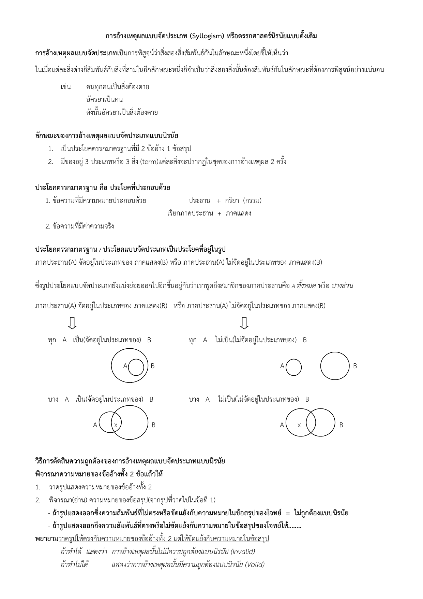

การอ้างเหตุผลแบบจัดประเภท (ฉบับย่อ)
- การอ้างเหตุผลแบบจัดประเภท (Syllogism) หรือ ตรรกศาสตร์นิรนัย:
- ใช้เพื่อพิสูจน์ความสัมพันธ์ระหว่างสิ่งสองสิ่งโดยการชี้ให้เห็นถึงความสัมพันธ์กับสิ่งที่สาม
- การอ้างเหตุผลนี้สามารถพิสูจน์ได้ว่า สิ่งสองสิ่งนั้นต้องสัมพันธ์กันตามที่ต้องการพิสูจน์
- ตัวอย่าง:
- "คนทุกคนเป็นสิ่งต้องตาย"
- "อัครยาเป็นคน"
- ดังนั้น "อัครยาเป็นสิ่งต้องตาย"
- ลักษณะของการอ้างเหตุผลแบบจัดประเภท:
- มี 2 ข้ออ้าง และ 1 ข้อสรุป
- มี 3 สิ่ง (term) ซึ่งแต่ละสิ่งปรากฏในชุดของการอ้างเหตุผล 2 ครั้ง
- ประโยคตรรกมาตรฐานประกอบด้วย:
- ภาคประธาน + ภาคแสดง (ประโยคที่ประกอบด้วยประธานและกรรม)
- ประเภทของประโยค:
- ทุก A เป็น B
- ทุก A ไม่เป็น B
- บาง A เป็น B
- บาง A ไม่เป็น B
- วิธีการตัดสินความถูกต้องของการอ้างเหตุผล:
- ขั้นตอนการตรวจสอบ:
- วาดรูปแสดงความหมายของข้ออ้างทั้ง 2 ข้อ
- พิจารณาความหมายของข้อสรุปจากรูปที่วาด
- การตรวจสอบความถูกต้อง:
- ถ้ารูปแสดงความสัมพันธ์ที่ไม่ตรงหรือขัดแย้งกับข้อสรุป = ไม่ถูกต้องแบบนิรนัย
- ถ้ารูปแสดงความสัมพันธ์ที่ตรงหรือไม่ขัดแย้งกับข้อสรุป = ถูกต้องแบบนิรนัย
- วิธีการพิสูจน์:
- พยายามวาดรูปให้ตรงกับความหมายของข้ออ้าง แต่ขัดแย้งกับข้อสรุป
- ถ้าทำได้: การอ้างเหตุผลนั้นไม่ถูกต้อง (Invalid)
- ถ้าทำไม่ได้: การอ้างเหตุผลนั้นถูกต้อง (Valid)
- ขั้นตอนการตรวจสอบ:
- ประเภทของประโยคตรรกศาสตร์ที่ใช้ในการอ้างเหตุผล:
- ประโยคที่มีการจัดประเภทของสิ่งต่างๆ (A และ B) และการสร้างความสัมพันธ์ระหว่างกัน
- การเชื่อมโยงระหว่าง ทุกคน หรือ บางคน และการพิสูจน์ความสัมพันธ์นั้นโดยอาศัยหลักการตรรกศาสตร์
การอ้างเหตุผลแบบจัดประเภทนี้สำคัญในการทำให้เราตัดสินใจหรือเข้าใจได้อย่างชัดเจนว่าเหตุผลที่กล่าวมาเป็น "ถูกต้อง" หรือ "ไม่ถูกต้อง" ตามตรรกศาสตร์นิรนัย
Previous
